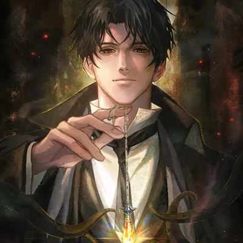
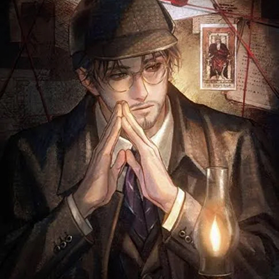
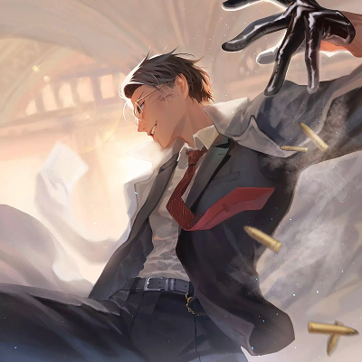

Klein Moretti
Klein Moretti é o protagonista de Lord of the Mysteries, um jovem historiador inteligente, analítico e extremamente curioso, cuja vida muda drasticamente após participar de um ritual misterioso que o coloca em contato direto com o mundo do ocultismo e do sobrenatural. Inicialmente cético, racional e pragmático, ele precisa aprender a lidar com forças que desafiam toda lógica e compreensão humana, enquanto tenta preservar sua sanidade, sua ética e sua humanidade diante de horrores inimagináveis. Klein é metódico, observador e extremamente prudente, enfrentando cada desafio com paciência, cálculo e reflexão detalhada, mesmo quando cercado por perigos, conspirações e enigmas que poderiam destruir qualquer mente comum. Sua empatia, gentileza e profundo senso de justiça o diferenciam em um universo dominado por ambição, loucura e manipulação. Ao longo de sua jornada, ele cresce de forma notável, evoluindo de um simples estudioso curioso para uma figura poderosa, respeitada e temida, mas ainda guiada por princípios e moralidade. Apesar do peso esmagador de segredos antigos e responsabilidades extraordinárias, Klein permanece humano, equilibrando razão, fé, coragem e determinação, tornando-se um símbolo de perseverança, inteligência e resistência diante do caos absoluto e da insanidade.

Sherlock Moriarty
Sherlock Moriarty é a identidade adotada por Klein Moretti, o protagonista de Lord of the Mysteries. Sob esse nome, ele se apresenta como um detetive excêntrico, sempre vestindo terno, cartola e mantendo uma postura elegante e racional. À primeira vista, é um homem culto e perspicaz, com um humor refinado e um olhar que parece decifrar cada detalhe ao seu redor. No entanto, por trás dessa fachada tranquila, esconde-se alguém que lida com segredos insondáveis e forças sobrenaturais além da compreensão humana. Sherlock é uma máscara cuidadosamente construída para proteger Klein enquanto ele explora o ocultismo e ascende pelas Sequências de Beyonders. Seu comportamento calculado e suas palavras medidas disfarçam a constante luta interna entre sanidade e loucura. Carrega um ar de mistério que atrai e intimida, sendo ao mesmo tempo um observador e um jogador do grande teatro do destino. Inteligente, paciente e enigmático, Sherlock Moriarty representa o equilíbrio entre o racional e o arcano, o homem e o mito, o detetive e o ocultista — uma das personas mais marcantes do mundo sombrio e fascinante de Lord of the Mysteries.

Gehrman Sparrow
Gehrman Sparrow é uma das identidades adotadas por Klein Moretti em Lord of the Mysteries. Essa persona remonta à sua juventude, quando, como Zhou Mingrui, ele era um estudante universitário comum. Após sua transmigração para o mundo de Backlund, Klein assume o nome Gehrman Sparrow, um aventureiro renomado por sua habilidade em caçar piratas. Essa identidade serve como uma fachada para suas atividades como "O Mundo", uma das figuras mais poderosas e misteriosas da história. Fisicamente, Gehrman é descrito como um homem com óculos de aro dourado, cabelo preto bem arrumado e olhos castanho-escuros. Sua aparência é mais fria e imponente do que a de Klein, refletindo sua nova posição no mundo sobrenatural. Ele é conhecido por sua habilidade em intimidar e por sua presença enigmática, que o torna uma figura temida e respeitada. Embora Gehrman Sparrow seja uma criação de Klein, ele representa uma faceta mais dura e calculista do protagonista. Essa identidade é essencial para suas interações no mundo físico, enquanto outras personas, como "O Bobo", são usadas em contextos mais espirituais e divinos. Assim, Gehrman Sparrow é uma das muitas camadas que compõem a complexa personalidade de Klein Moretti.